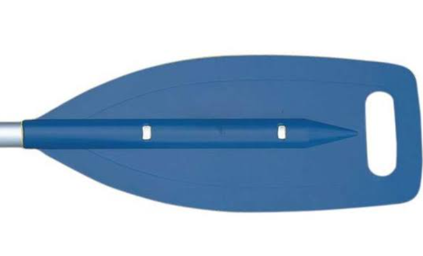

where it all began

Our aims is
To provide a fun and challenging outdoor activity that allows people to connect with nature and experience the thrill of whitewater rafting.To promote physical fitness and health through an active and engaging outdoor activity.
Thrill seekers who are looking for an adrenaline rush. People who are interested in learning new skills and challenging themselves. Nature lovers who want to experience the beauty of rivers and the surrounding scenery.